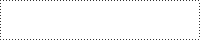

さかなのキャラまとめです。
アイコンクリックで大きめの絵につながります。
現行PBWキャラ

- モニカ・フランクリン / Monica Franklin
Mist of War[第四期] Eno.206
兄を追いかけてハイドラライダーとなった少女。
ジャンク街の生まれ。屑のような継父との二人暮らしだったが、出奔して残像領域を訪れる。
150cm半ばの低身長の割にバストの大きい、いわゆるトランジスタグラマーだが色気が全くなく、
本人も性を意識されるような格好を好まない。
泣き虫のくせに跳ねっ返りで猪突猛進、その割どこか冷めた見方も持ち合わせた17歳。
機械いじりが得意で家事能力もそれなり。


- ロニー・フランクリン/ Ronnie Franklin
Mist of War[第四期] Eno.206 サブキャラ
モニカの兄。
大柄だが優しい気性の持ち主で、穏やかで明るく人好きのする性格。
尊敬してやまない兄貴分をあてに、莫大な報酬が望めるというハイドラライダーとなったが、
得られた利益の殆どはモニカらの生活費として送っていた。
早く生活を安定させてモニカを呼び寄せたいと考えていたが……。


- クロニカ・Y・ニールネイル / Cronica Y Neillnail
Seven Seas Pno.68
片角の少年。混血の一族”ニールネイル”に生まれたY。
長くニールネイルの郷で暮らしていたが出奔、逃亡の後、血と金の提供を受ける契約のもとにテリメインを訪れる。
総じて自我が薄く、言動も記憶も曖昧で頼りない癖に図々しい。
ダークエルフ、鬼、サキュバスの血が多く顕出していると見られる。
生きるための糧として精の代わりに、人間か、人間に近い生き物の血を求めている。


- エイニ・N・ニールネイル / Eini N Neillnail
Seven Seas Pno.68 サブキャラ
狼の獣人めいた外見の青年。混血の一族”ニールネイル”の出身、”同族狩り”の狩人。
逃亡した”Y”であるところのクロニカを連れ戻すべくテリメインを訪れた。
バジリスク由来の鱗が左半身に見え隠れする他、
僅かな時間であるものの相手の動きを止めることのできる魔眼という形でもその特徴を受け継いでいる。
戦闘職らしく鍛えられた大柄の持ち主。本来の獲物はハルバード。


- シュテファン / Stefan
Last Order Eno.171 他GrandBlaze、タワムレガキなど
冒険者として旅をするエルフの少年。長命のエルフとて長く生きればもう少し青年らしい外見になっているはずなのだが、
彼の場合は少年期にかけられた呪いによってその成長を止めている。旅の目的の一つもその呪いを解呪すること。
呪いは他にも魔力の使用の制限、一部を除いた五感の鈍化など多岐に渡り、
夥しい数と種類の重ね掛けを受けているが少しずつ解呪は進んでいる。
そういった諸々の事情はさて置いて本人は割と元気に旅を楽しんでいる。おきらくごきらく。超前向き。誇り高きエルフ。
Last Orderでの探索においては依頼主の意向で一風変わった装いをしている。普段は割とこんな格好。


- ヨル / Yoru
Soul Drops[第六期] Eno.161
白衣を羽織った天使。
ホットパンツに黒タイツ、短めのシャツから覗くへそ、そもそも隠してない胸、
そういった諸々はとにかくさて置いて堂々と男装を名乗る。男装っつったら男装。
前世ではそもそも本当に男だったとか、とある機関で医者の皮を被った色んな意味で非合法な役職に就いていただとか、
大切な相手の死を認められずに醒めぬ夢に落ちたりなどしていただとか、
どんな事実があったとしてももはや覚えてないのでそれはそれ。今は元気。

{kind=link}
リンク

見出しh2,h3,h4
サンプル文字。<em>強調です</em>
<del>サンプル文字。取り消しです</del>
<ins>サンプル文字。下線付きです</ins>
サンプル文字。<strong>より強い強調です</strong>
<p>普通のP段落</p>
<p class="blank1">段落下の余白少なめ</p>
<p class="blank2">段落下の余白多め</p>
<p class="small">段落全体の文字を小さくする</p>
<p class="note">ノート線付き</p>
<p center="center">真ん中寄せ</p>
- リストです。
- マーカー付き(黒丸)
- リスト項目
- リストです。
- マーカー付き(白丸)
- リスト項目
<p class="box1">装飾BOX</p>
2013.8.31
段落の下にラインが付きます。<p class="rireki">P段落の下に線が付くよ</p>
トップページでお知らせを表示してみたり、更新履歴に使ったりなど色々。

-
アイコン付き、文章部分。
これを使用する場合、アイコンのサイズは統一して下さい。
このサンプルアイコンは50pxですが、アイコンのサイズを変更した場合は外部CSSの/* ↓使用するアイコンの横サイズを指定して下さい */とある箇所も変更して下さい。
-
字が少ないとこうなっちゃいます。<br>などで調節してみてください。
-
大変！
-
2013.8.30
文章文章文章文章文章文章文章文章文章文章文章文章文章文章文章文章文章文章文章文章文章文章文章文章文章文章文章文章文章文章文章文章文章文章文章文章文章文章文章文章文章文章文章文章文章文章文章文章文章文章文章文章文章文章文章文章文章文章文章文章文章文章文章文章文章
テーブルサンプル
テーブルサンプルです。
| 文章文章文章文章文章文章文章文章文章文章文章文章文章文章文章文章文章文章文章文章文章文章文章文章文章文章文章文章文章文章文章文章文章文章文章文章文章文章文章文章文章文章文章文章文章文章文章文章文章文章文章文章文章文章文章文章文章文章文章文章文章文章文章文章文章 | |
| 文章文章文章文章文章文章文章文章文章文章文章文章文章文章文章文章文章文章文章文章文章文章文章文章文章文章文章文章文章文章文章文章文章文章文章文章文章文章文章文章文章文章文章文章文章文章文章文章文章文章文章文章文章文章文章 | |
| セルを色付きに | 通常は背景白です。 |
| セルを色付きに2 | class指定で背景色を指定しています。 |
| セル | テーブルの色関係や余白なども外部CSSで指定してます。 |
その他
思いがけず勃興する国家というものは、自然界の生れてはたちまち成長する他の事物と同様、しっかりした土台もなく、最初の嵐で転覆されないような安定した国家とは似たところもないのです。
言ったように、予期せず君主となった人たちが才能に恵まれていないかぎり、幸運がその膝に投げてくれたものを直ちにつかむだけの用意もなく、また彼が君主となる以前に他人がしつらえてれた土台を、後になって築かざるをえなくなるのです。
才能によるか、幸運によるかという君主に成り上るこの二つの方法に関して、記憶の中から二つの事例を挙げておこうと思います。
それは、フランチェスコ・スフォルツァとチェザーレ・ボルジアの例です。
フランチェスコは、適切な手段と大きな才能によって、一私人からミラノ公に成り上ったのですが、彼は獲得するのに幾多の苦心を重ねたのに、維持するにはほとんど苦労しませんでした。
「君主」ニッコロ・マキャヴェリ：著 永江良一：訳 (一部抜粋) 『プロジェクト杉田玄白』